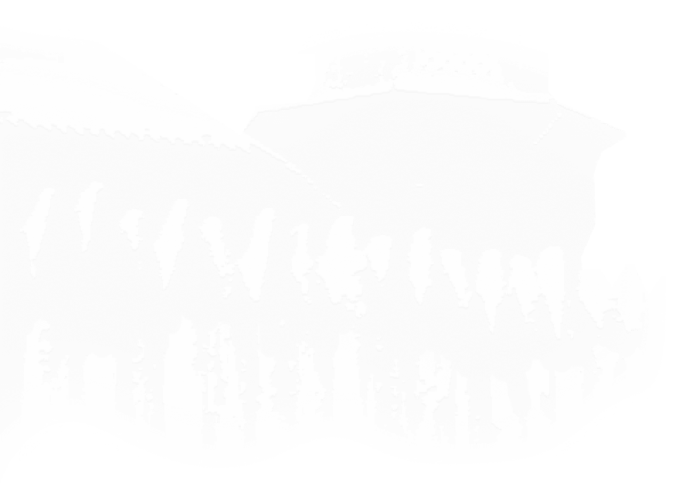
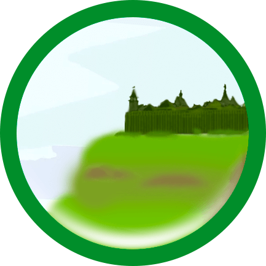
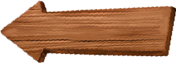

Средний сын Донды батыра, Гурья батыр, построил городище с помощью отца и братьев вверх по течению реки Чепцы и назвал его по своему имени Гурьякаром (Гордино).

×
Результаты исследований 1979 г. Городище Гурья-кар расположено в 200-х м от юго-западного конца д. Гордино Балезинского района Удмуртской АССР. Живущие здесь удмурты называют деревню Гурьякар, татары — Гурья кала. Памятник известен в литературе давно. Еще в конце XIX в. Н. Г. Первухин дал описание городища, культурного слоя и найден¬ных вещей. Он указал, что Гурья-кар относится к кругу чепецких городищ, связанных с легендами об удмуртских богатырях, Гурья по преданиям, был одним из сыновей Донды, давших свои имена осно¬ванным ими городищам Идна-кар, Весья-кар, Зуй-кар и др. Н. Г. Пер¬вухин отметил, что среди местного населения существуют предания о находимых на городище кладах, подтверждаемые многочисленными находками бус, бронзовых подвесок, серебряных гривен, монет и дру¬гих поделок. Позднее в ограде бывшей мечети д. Гордино была обна¬ружена надгробная плита с надписью на древнебулгарском языке, датирующаяся 1323 г. В 1957 г. городище исследовано разведочным отрядом Удмуртской археологической экспедиции под руководством В. А. Семенова, вы¬явившим, что городище укреплено не двумя, как указывал Н. Г. Пер¬вухин, а тремя валами. Первый наружный вал имеет длину 90 м, ширину у основания — 18 м, высоту —от 0,1 до 0,5 м. Второй (сред¬ний) вал находится на расстоянии 70 м от первого и имеет длину 60 м, ширину у основания — 15 м и высоту — 0,2—0,4 м. Третий (внут¬ренний) вал находится в 30 м от второго, его длина 49 м, ширина у основания 6 м, высота 0,1—0,4 м и находится в 66 м от мыса го¬родища. В. А. Семеновым высказано предположение, что в период XII—XV вв. городище было расширено и занимало большую часть мыса, о чем может свидетельствовать, по его мнению, наличие третьего вала, находящегося в 350 м от юго-западного конца мыса, и большое количе¬ство гончарной керамики; встречающейся за валом2. Для проверки этого предположения необходимы широкие исследования, Площадь городища составляет 12000 кв. м. Юго-западный склон мыса высокий и крутой, поднимается над поймой р. Чепцы на высоту 24 м. С северной стороны мыс ограничен длинным оврагом, по которо¬му протекает ручей, впадающий в р. Чепцу. В настоящее время часть городища за вторым валом распахива¬ется, здесь встречаются фрагменты лепной и гончарной посуды, отдельные вещи. Основная площадка задернована, валы еще больше оплыли, едва заметны. Поверхность в нескольких местах разрушена кладойскательскими ямами и дорогой, проходящей через площадку городища от поймы в д. Гордино. В 1979 году исследования проводились на мысовой части памят¬ника (площадь раскопа 288 кв. м.). Мощность культурного слоя на западных участках раскопа составляет 100 см, на восточных посте¬пенно увеличивается и доходит до 170 см. Выявлена следую¬щая стратиграфия: 1—Дерн (20—25 см), 2 — золистая супесь (40—60 см), 3 — гумусированная супесь (40—70 см), 4 — предматерик — плотный сероватый грунт с включениями углей и щепы (10—30 см), 5 — материк — красно-коричневая глина. Основная часть находок и сооружения залегают в слое серой зо¬листой супеси (слой 2) и гумусированной супеси (слой 3). Эти слои стратиграфически четко выделяются по всем участкам раскопа. Следует отметить, что в культурном слое чепецких памятников, в т. ч. и городища Гурья-кар, почти не сохраняется дерево. Поскольку все жилые, хозяйственные и производственные сооружения строились в лесном краю из дерева, это сильно затрудняет выявление границ сооружений. Приходится учитывать размещение вещевого инвентаря, ямок от столбов и кольев, хозяйственных ям, очагов и т. д. Особенно обращают на себя внимание мощные площадки прокаленной глины ярко-оранжевого цвета размерами 1,5—2,0X2,0—3,0 м и толщиной до 0,7—1,0 м. В разрезе эти площадки имеют тонкие гумусированные или зольные прослойки, что, по-видимому, свидетельствует об обнов¬лении этих площадок при перестройках. К этим пятнам прокала час¬то примыкают площадки дощатого настила и яма. Предположитель¬но пятна прокала связаны с частью пола жилых и некоторых произ-водственных сооружений. Вскрытые в нижнем слое городища сооружения в этой предвари¬тельной публикации мы не называем более определенно до вскрытия здесь значительных площадей и сравнительного анализа обнаруженных объектов. Тем не менее привлекая полученные на городище Идна-кар материалы, мы склонны считать их жилищами. К сожалению, в настоящее время их точные границы часто не устанавливаются, не выявлены детали интерьера, в пределах сооружений не обнаружены печи или очаги, но некоторые общие черты можно уже указать. Цент¬ральную часть пола составляет плотно утрамбованная площадка из прокаленной ярко оранжевой глины, к которой примыкают дощатые настилы. Возле жилища всегда находится яма для хранения припасов, а также определенное место, куда выбрасывались кости и зола. В пользу предположения о жилом характере в какой-то степени могут говорить и находки развалов горшков вокруг сооружений, быто¬вых изделий из кости, большого количества бус, скоплений зерен, топоров и др. Однако здесь найден и большой ассортимент кузнечных и ювелирных орудий. Это тигли, шлаки, слитки бронзы, молот-кувал¬да, наковальня, пробойник, долото, клад гривен, явно приготовленных для сбыта, что может свидетельствовать как о производственном ха¬рактере сооружений, так и о том, что в этих жилищах жили кузнецы-ювелиры. Из книги: Средневековые памятники бассейна р. Чепцы.: Сб. материалов ряда археологических памятников бассейна р. Чепцы концаI – начала II тысячелетия н. [Текст]/ Отв. редактор М. Г. Иванова. - Ижевск, 1982. – 132 с., ил.